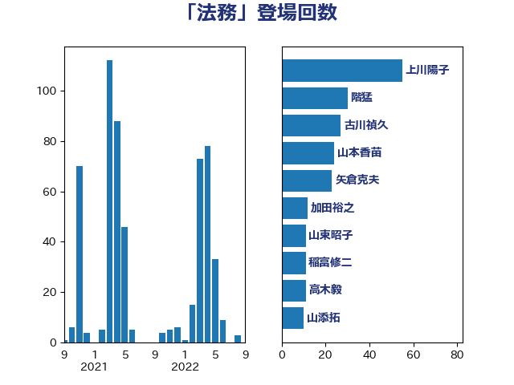

単語「法務」

| 上川陽子 | 自由民主党 | 55 回 |
| 階猛 | 立憲民主党 | 30 回 |
| 古川禎久 | 自由民主党 | 27 回 |
| 山本香苗 | 公明党 | 24 回 |
| 矢倉克夫 | 公明党 | 23 回 |
| 加田裕之 | 自由民主党 | 12 回 |
| 山東昭子 | 自由民主党 | 11 回 |
| 稲富修二 | 立憲民主党 | 11 回 |
| 高木毅 | 自由民主党 | 11 回 |
| 山添拓 | 日本共産党 | 10 回 |
| 磯崎仁彦 | 自由民主党 | 8 回 |
| 大口善徳 | 公明党 | 7 回 |
| 後藤祐一 | 立憲民主党 | 7 回 |
| 義家弘介 | 自由民主党 | 7 回 |
| 安江伸夫 | 公明党 | 6 回 |
| 山口俊一 | 自由民主党 | 6 回 |
| 森まさこ | 自由民主党 | 6 回 |
| 細田博之 | 自由民主党 | 6 回 |
| 吉田統彦 | 立憲民主党 | 5 回 |
| 嘉田由紀子 | 無所属 | 5 回 |
| 本村伸子 | 日本共産党 | 5 回 |
| 石川大我 | 立憲民主党 | 5 回 |
| 藤岡隆雄 | 立憲民主党 | 5 回 |
| 吉川沙織 | 立憲民主党 | 4 回 |
| 木原誠二 | 自由民主党 | 4 回 |
| 津島淳 | 自由民主党 | 4 回 |
| 田所嘉徳 | 自由民主党 | 4 回 |
| 鎌田さゆり | 立憲民主党 | 4 回 |
| 城井崇 | 立憲民主党 | 3 回 |
| 柚木道義 | 立憲民主党 | 3 回 |
| 稲田朋美 | 自由民主党 | 3 回 |
| 萩生田光一 | 自由民主党 | 3 回 |
| 三宅伸吾 | 自由民主党 | 2 回 |
| 井林辰憲 | 自由民主党 | 2 回 |
| 吉田宣弘 | 公明党 | 2 回 |
| 大岡敏孝 | 自由民主党 | 2 回 |
| 小沼巧 | 立憲民主党 | 2 回 |
| 小野田紀美 | 自由民主党 | 2 回 |
| 自見はなこ | 自由民主党 | 2 回 |
| 藤井比早之 | 自由民主党 | 2 回 |
| 豊田俊郎 | 自由民主党 | 2 回 |
| 鈴木宗男 | 日本維新の会 | 2 回 |
| 鈴木馨祐 | 自由民主党 | 2 回 |
| 青山繁晴 | 自由民主党 | 2 回 |
| あべ俊子 | 自由民主党 | 1 回 |
| 下野六太 | 公明党 | 1 回 |
| 中根一幸 | 自由民主党 | 1 回 |
| 伊藤孝江 | 公明党 | 1 回 |
| 加藤勝信 | 自由民主党 | 1 回 |
| 吉田久美子 | 公明党 | 1 回 |
| 和田有一朗 | 日本維新の会 | 1 回 |
| 堀場幸子 | 日本維新の会 | 1 回 |
| 大野敬太郎 | 自由民主党 | 1 回 |
| 守島正 | 日本維新の会 | 1 回 |
| 寺田学 | 立憲民主党 | 1 回 |
| 小熊慎司 | 立憲民主党 | 1 回 |
| 尾辻秀久 | 無所属 | 1 回 |
| 山本順三 | 自由民主党 | 1 回 |
| 山田賢司 | 自由民主党 | 1 回 |
| 川合孝典 | 国民民主党 | 1 回 |
| 後藤茂之 | 自由民主党 | 1 回 |
| 東徹 | 日本維新の会 | 1 回 |
| 林芳正 | 自由民主党 | 1 回 |
| 枝野幸男 | 立憲民主党 | 1 回 |
| 梶山弘志 | 自由民主党 | 1 回 |
| 橋本岳 | 自由民主党 | 1 回 |
| 水岡俊一 | 立憲民主党 | 1 回 |
| 永岡桂子 | 自由民主党 | 1 回 |
| 海江田万里 | 立憲民主党 | 1 回 |
| 牧原秀樹 | 自由民主党 | 1 回 |
| 田島麻衣子 | 立憲民主党 | 1 回 |
| 田村まみ | 国民民主党 | 1 回 |
| 田村憲久 | 自由民主党 | 1 回 |
| 福山哲郎 | 立憲民主党 | 1 回 |
| 福岡資麿 | 自由民主党 | 1 回 |
| 穀田恵二 | 日本共産党 | 1 回 |
| 竹谷とし子 | 公明党 | 1 回 |
| 米山隆一 | 立憲民主党 | 1 回 |
| 葉梨康弘 | 自由民主党 | 1 回 |
| 谷合正明 | 公明党 | 1 回 |
| 鈴木庸介 | 立憲民主党 | 1 回 |
| 鈴木義弘 | 国民民主党 | 1 回 |
| 鈴木貴子 | 自由民主党 | 1 回 |
| 関口昌一 | 自由民主党 | 1 回 |
| 青山大人 | 立憲民主党 | 1 回 |
| 高良鉄美 | 無所属 | 1 回 |